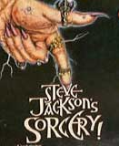

Note: this is a cached version of http://www.wapland.com/art/223.html because wapland.com has shutdown
Special Report:|  |
As the author and co-author of over a dozen of these books, Steve Jackson has become somewhat of a legend in the game world. Now, he's also producing WAP games.
Sorcery!
In the early eighties, Jackson wrote the more advanced Sorcery-series, where you played the role of a wizard with an arsenal of spells up his sleeve. Now, almost twenty years later, Jackson has decided to revive the old books, joining forces with UK-based wireless games company Digital Bridges in developing Sorcery for WAP.
Many have claimed that mobile games will never catch on, due to the severe restrictions on graphics, sound, and screen size, but Jackson & Co. will hear of no such thing:
"If the sceptics were right, then the Gameboy and Tamagotchi would never have existed. No one expects players to play WAP games in preference to PC games," says Jackson. "It's the convenience that makes it all work. With your mobile phone you have a game console in your pocket. Whenever you've got a few minutes to kill, playing a game is an option."
More images on WAP
Nevertheless, converting a complex game concept to WAP proves no easy task, as Jackson also experiences.
"There's no doubt some of the original ideas I had for Sorcery WAP have proven to be over-ambitious within WAP OS. So I've switched to concentrating on a series of 'game-within-game' devices, like the combat system and magic potions, which the WAP card/deck system can handle," Jackson says.
While the original books where filled with text and elaborative descriptions, more focus has been put on images in order to make Sorcery flow fluidly on WAP.
"We had to trim the text to the phone. But who wants to read text off a mobile phone screen anyway? A big plus is the fact that virtually every location is illustrated," says Jackson, pointing out that the Sorcery game books only had thirty illustrations.
'Quick hit' games that only takes a few minutes to play will be successful on WAP, he predicts, "and, hopefully, adventure games you can dip in and out of."
Sorcery would, of course, fall in the latter category.
The joy of blowing up a friend
When GPRS technology (which allows for always-online mobile Internet connection) is fully in place, the future looks promising for tomorrow's wireless games, the author says.
"Imagine that whenever you have a few moments and feel like playing a game, you have opponents you can play with. And I'm not talking about complete strangers," says Jackson, who sees online multiplayer games as really worthwhile only when you play against someone you know.
"I have no wish to play games against a complete stranger in Dubai, but I'm always up for a game with a friend: someone I know who I can visualise cursing as I blow up his laser tank," he says.
"With 'always on' systems there will always be someone on my buddy list who I can play with," Jackson says, adding: "My God! When will any work ever got done?"
While Sorcery will initially be a single-player wap game, the developers are already working on a two-player version.
Jackson's Christmas gift
Digital Bridges and Steve Jackson hope to have Sorcery ready for WAP by Christmas.
Jackson also currently works at UK-based Lionhead Studios with Peter Molyneux, who is in the process of finishing the god-simulator Black & White. Molyneux, one of the celebrity participants at Jackson's regular "Games Nights" sessions, is widely known and respected for such success titles as Populous, Syndicate, Theme Park, and Dungeon Keeper.
For more information on Sorcery, Steve Jackson and Digital Bridges, see www.wirelessgames.com.
If you're curious about the upcoming Black & White, surf to www.lionhead.com.